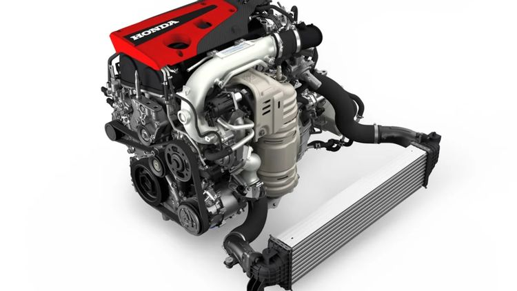
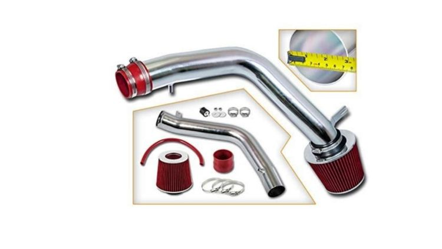
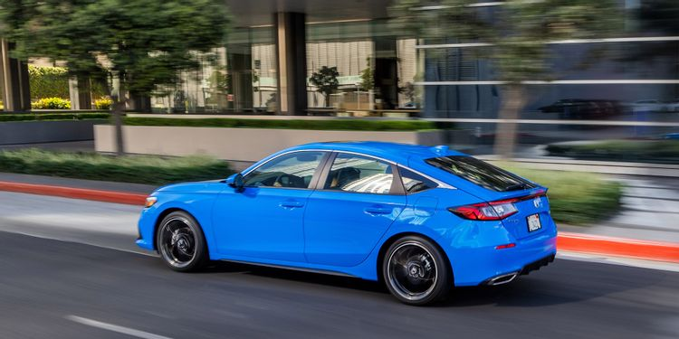

The Honda Civic is one of, if not the most popular and easiest cars to modify. Ever since the coupe model that was popularized by the Fast and The Furious films (the Honda Civic was so prevalent in the first movie it was practically a supporting character), the Honda Civic has been a popular choice for people who cannot afford top of the line sports cars but can afford to customize a very durable and customizer friendly vehicle. A modified Honda Civic, especially any coupe from 2002 onwards, can deliver a performance that rivals some of the most souped up factory made cars.
Honda Civics are incredibly affordable, whether buying new or used and currently come standard with an impressively efficient 1.5-liter four-cylinder engine that yields a sturdy 158-180 hp and 138-177 lb-ft of torque. Not bad for a small consumer car, but buying one used will get you even more power for cheaper, especially if you opt for a Civic Si or Type-R. Also, the car's long-lasting and interchangeable parts, a prominent selling feature of Japanese cars, also makes it perfect for mods.
Here are just some of the modifications that can turn any run-of-the-mill Honda Civic into a mean street machine. The following mods can help increase a Honda Civic’s horsepower, speed, and overall engine performance.
A Chinese tale tells of some men sent to harm a young girl who, upon seeing her beauty, become her protectors rather than her violators. That's how I felt seeing the Earth for the first time. I could not help but love and cherish her.
Replace Factory Wheels With Alloy Wheels
Upgrading a Honda Civic from the factory installed wheels to alloy ones not only makes a Honda Civic look cool, but can also make the car slightly faster thanks to its lighter weight and increased agility. Alloy wheels also improve shock and suspension response to road conditions. Forged alloy wheels help with both speed and endurance because they are not only lighter than standard wheels, they are also stronger.
Install Engine Tuners And Programers
One advantage of modern, digitized engines is that the engine control units (ECUs) they come installed with can be reprogrammed via tuning software, chips, and plug-ins. Shop around long enough and anyone can find affordable, well-reviewed engine tuners and programmers.
Cold Air Intakes
Cold air intakes are a cheap mod that can increase a Civic’s horsepower, improve throttle response, and keep the engine cooler, which helps the car’s overall performance. Out of all available mods, this is one of the most practical that a Honda Civic owner can choose from because the intakes are easy to install and can be found for as low as $200.
Lowered Springs And Suspension
If speed is what’s needed, then lowering your Honda Civic a few inches can help lower drag and reduce body roll when cornering. Lowering suspension can affect a car’s ride quality though, but adding adjustable coilovers on all four corners can give you that improved performance without affecting the car's ride. Remember, altering your car's body can make the car unsafe if done improperly.